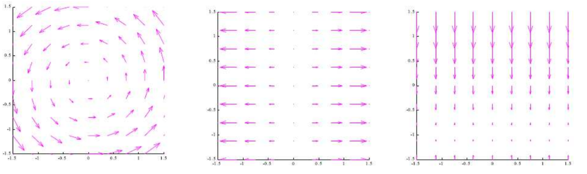
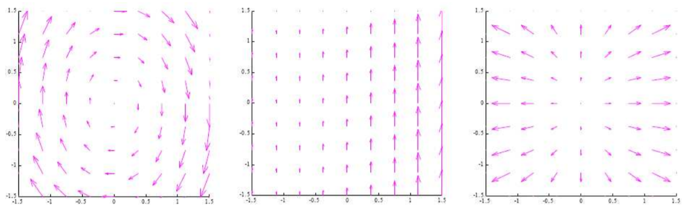

True or False? If all the flow lines of a vector field \(\vec{F}\) are straight lines, then \( \nabla \cdot \vec{F} = 0 \).
True or False? If all the flow lines of a vector field \(\vec{F}\) are straight lines, then \( \nabla \times \vec{F} = \vec{0}\).
Moving from the picture on the left to the picture on the right, what are the signs of \( \nabla \cdot \vec{F} \)?

The pictures below show top views of three vector fields, all of which have no \(z\) component. Which one has the curl pointing in the positive
\(\hat{z}\) direction at the origin?

Let \(\displaystyle \vec{F} = \begin{bmatrix} x^2 y \\ xy \\ xyz \end{bmatrix}\). Find \(\nabla \cdot \vec{F}\).
Sketch each of the 2D vector fields below and calculate the divergence.
What does divergence measure? What does it mean when a vector field is solenoidal?
Let \(\vec{F}, \vec{G}\) be vector fields and \(f\) be a scalar field.
Consider a vector field given in cylindrical coordinates \(\vec{F}(r,\theta,z) = F_1 \hat{r} + F_2 \hat{\theta} + F_3 \hat{z}\).
\(\displaystyle \nabla \cdot \vec{F} = \frac{1}{r} \frac{\partial (rF_1)}{\partial r} + \frac{1}{r} \frac{\partial F_2}{\partial \theta} + \frac{\partial F_3}{\partial z}\).
Find the divergence of \(\vec{F} = 2\theta \hat{r} + 3z \hat{\theta} + 4r \hat{z}\).